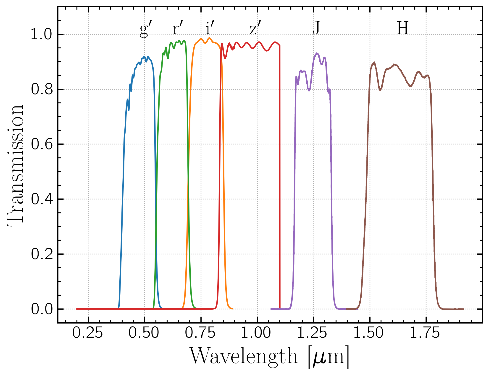
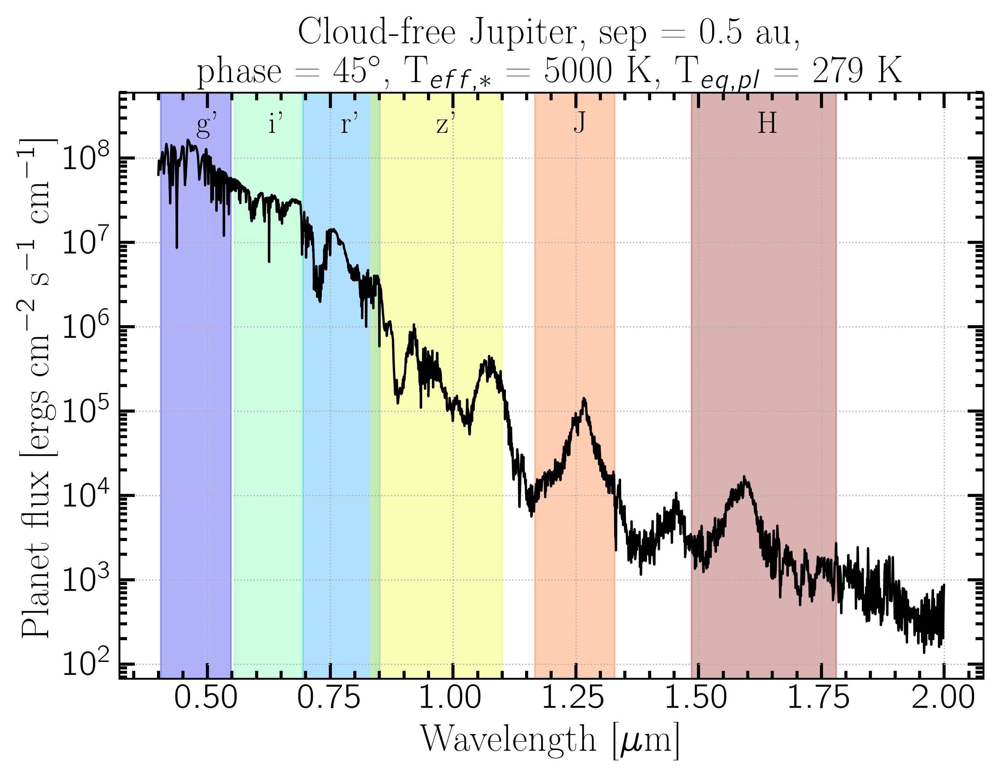
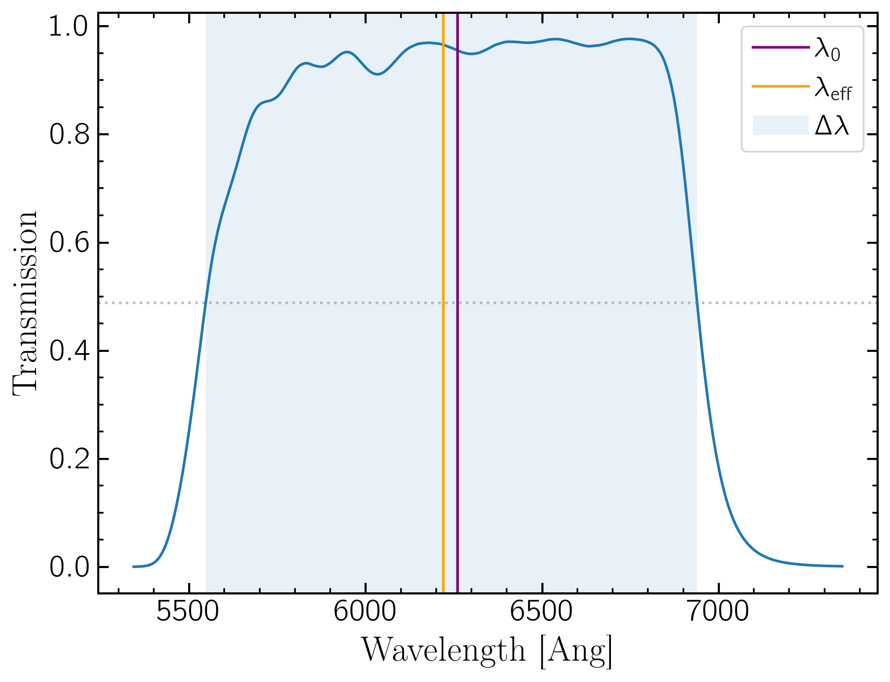
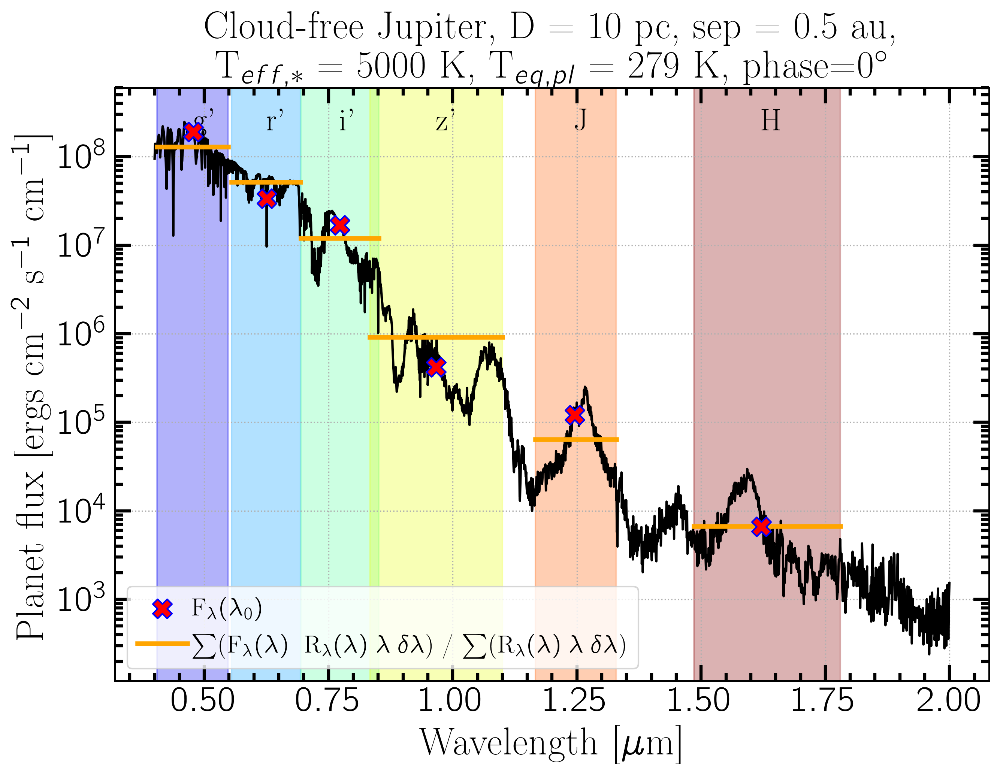
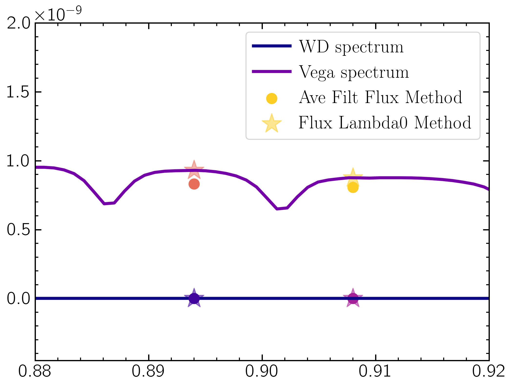

Every time I go to work with photometry I get very confused about wavelengths, spectra filter curves, and how to get useful quantities like flux and magnitudes. I am writing this explainer to future me.
Ok so here are some filter transmission curves:
And an example reflected light model spectrum:
I will use this spectrum for all discussion and calculations throughout. It was produced using PICASO, a 1d self-consistent radiative transfer code for modeling exoplanet atmospheres. So the flux shown is from the surface of the star. So the first thing to do is correct for the flux observed from Earth. $$F_{\lambda} (\lambda) = I (\lambda) \; \Omega$$ $$\Omega = \frac{\pi R_p^2}{D^2}$$ where $I$ is the intensity at the planet surface, D is the distance to the planet, and R$_p$ is the radius of the planet. Of course distance and radius must be in the same unit, which you can do easily with astropy
or $$\frac{f_\nu}{\rm{Jy}} = 3.34\times10^4\; \left(\frac{\lambda}{\rm{Ang}}\right)^2\; \frac{f_\lambda}{\rm{ergs}\; cm^{-2}\; s^{-1}\; Ang^{-1}}$$
Now to convolve the spectrum with the filter curve. There are two conventions (to my knowledge) for reporting flux in a filter: the average flux in the filter and the flux at the central wavelength $\lambda_0$
$$\lambda_0 = \frac{\int_{0}^{\infty} \lambda \; R(\lambda)\,d\lambda}{\int_{0}^{\infty} R(\lambda)\,d\lambda}$$
where $R(\lambda)$ is the filter transmission curve. It's basically the weighted average wavelength of the filter curve. It's often called central wavelength. There is also the ``pivot" or effective wavelength, which is $$\lambda_{\rm{eff}}^2 = \frac{\int_{0}^{\infty} R(\lambda)\,d\lambda}{\int_{0}^{\infty} \frac{1}{\lambda^2} R(\lambda)\,d\lambda}$$ This is the value of $\lambda$ that makes the conversion in the flux conversion equation exact for that filter(reference). Sometimes $\lambda_0$ is also called effective width. It can be confusing which definition people are using when they use eff width without defining how it is computed. But they are really close in value so it often makes little difference. I will use $\lambda_0$ or central wavelength to be precise.
Now $$F_\lambda(\lambda_0)\; \Delta \lambda = \int_{0}^{\infty} F_\lambda(\lambda)\; R(\lambda)\,d\lambda$$ where $\Delta \lambda$ is the effective width, or the full width at half maximum (FWHM).
An illustration of these definitions:
Because filters have all different shapes, the average flux in the filter can't be written as the flux at the central wavelength. So the convention is typically to report the flux at the central wavelength as the flux in the filter. This will require interpolating the flux array to get the flux at the central wavelength. One way to do it is:
This is a good way to go for computing colors in different filters since it accounts for the difference in filter widths for the two filters without having to compute them.
Another way to do it is compute the weighted average of the flux multiplied by the filter curve.
$$\overline{F_\lambda(\lambda)} = \frac{\sum F_\lambda(\lambda) \times R(\lambda) \times \lambda \times \delta\lambda}{ \sum R(\lambda) \times \lambda \times \delta\lambda}$$
In code this can be done:
But this is not the same as the flux at the central wavelength, so it is better plotted as a bar spanning the filter's $\Delta \lambda$ rather than as a point at a specific wavelength.
This is a good metric to use if you're trying to account for the total flux or energy received in a filter.
The two methods are close but aren't exactly the same. This figure shows the two methods applied to the spectrum shown above. Because of spectrum features the two conventions typically don't agree. In the r$^{\prime}$, $\lambda_0$ happens to fall on an absorption feature and so is lower than the average, while in J band, absorption features on either side of $\lambda_0$ make F($\lambda_0$) much higher than the average. Coincidentally they are almost the same in H band for this model.
So neither are ``correct" (whatever that means), but both are used. It's important to define which one is being used and plot them appropriately.
To use these to compute Vega magnitudes, we need to normalize the flux in the filters computed above to the Vega spectrum in these filters. You can get a model spectrum of Vega (aka Alpha Lyr) from HST CALSPEC or from Pysynphot as above. Using either of the above methods, compute the flux of your star and of Vega in the desired filter, then convert to Vega mags as
$$m = -2.5\, \rm{log\left(\frac{F_{\lambda,*}}{F_{\lambda,Vega}}\right)}$$
Then the color between two filters is just the magnitude in one filter minus the magnitude in the other
$$\rm{color} = \rm{mag_{f1}} - \rm{mag_{f2}}$$
The difference in the two flux calculation methods can sometimes yield differences significant enough to matter. As an illustration I will use an example of computing the colors of a Hydrogen-dominated white dwarf with Teff = 5000K in two filters, the SDSS $z^{\prime}$ filter ($\lambda_0 = 0.894\mu$m) and the MagAO-X $z^{\prime}$ filter ($\lambda_0 = 0.908\mu$m). SDSS filter curves can be found at the SVO Filter Profile Service, MagAO-X filter curves can be found in instrument handbook. I used Hydrogen-dominated WD models from Koester et al. 2009. Note that the Koester models (as with many stellar spectral models) are computed from the surface of the star, while the Vega model from CALSPEC is as observed on Earth, so we need to scale the flux to that arriving at the observer. $$F = I \Omega$$ where $F$ = flux at Earth, $I$ = model intensity, and $$\Omega = \frac{R_p^2}{D^2}$$ where $R_p$ = planet radius and $D$ = distance. For this example I used the average WD radius of 0.01 Rsun and the distance to Vega, 7.68 pc. Since I'm examining color here this isn't very important, since color compares the shape of the flux and this just scales the magnitude, so it shouldn't impact the colors. Nevertheless it is important to keep track of what your model assumptions are!
This plot shows the flux computed for the WD (blue) and Vega (purple) in the SDSS and MagAO-X $z^{\prime}$ filters using the average filter flux method (circles) and the flux at the effective wavelength (stars). Due to Vega spectral features, the two method return slightly different results. The SDSS - MagAOX color computed using the avg flux method is 0.011 mags while for the central flux method it is 0.037 mags. Not a huge difference, but a different nonetheless. And don't forget that the SDSS system uses AB magnitudes not Vega magnitudes! A nice chart for conversion is here
Ok so here are some filter transmission curves:

And an example reflected light model spectrum:

I will use this spectrum for all discussion and calculations throughout. It was produced using PICASO, a 1d self-consistent radiative transfer code for modeling exoplanet atmospheres. So the flux shown is from the surface of the star. So the first thing to do is correct for the flux observed from Earth. $$F_{\lambda} (\lambda) = I (\lambda) \; \Omega$$ $$\Omega = \frac{\pi R_p^2}{D^2}$$ where $I$ is the intensity at the planet surface, D is the distance to the planet, and R$_p$ is the radius of the planet. Of course distance and radius must be in the same unit, which you can do easily with astropy
import astropy.units as u
D = 10*u.pc
Rp = 1*u.Rjup
Omega = np.pi * ((Rp/D).decompose())**2
Don't forget to pay attention to the flux units. I am using $f_\lambda$ throughout. If you need to convert from $f_\nu$, such as Janskys, it's:
$$f_\nu = \frac{\lambda^2}{c} f_\lambda$$or $$\frac{f_\nu}{\rm{Jy}} = 3.34\times10^4\; \left(\frac{\lambda}{\rm{Ang}}\right)^2\; \frac{f_\lambda}{\rm{ergs}\; cm^{-2}\; s^{-1}\; Ang^{-1}}$$
Combining filters and spectra
Flux at $\lambda_0$:
where $R(\lambda)$ is the filter transmission curve. It's basically the weighted average wavelength of the filter curve. It's often called central wavelength. There is also the ``pivot" or effective wavelength, which is $$\lambda_{\rm{eff}}^2 = \frac{\int_{0}^{\infty} R(\lambda)\,d\lambda}{\int_{0}^{\infty} \frac{1}{\lambda^2} R(\lambda)\,d\lambda}$$ This is the value of $\lambda$ that makes the conversion in the flux conversion equation exact for that filter(reference). Sometimes $\lambda_0$ is also called effective width. It can be confusing which definition people are using when they use eff width without defining how it is computed. But they are really close in value so it often makes little difference. I will use $\lambda_0$ or central wavelength to be precise.
Now $$F_\lambda(\lambda_0)\; \Delta \lambda = \int_{0}^{\infty} F_\lambda(\lambda)\; R(\lambda)\,d\lambda$$ where $\Delta \lambda$ is the effective width, or the full width at half maximum (FWHM).
An illustration of these definitions:

Because filters have all different shapes, the average flux in the filter can't be written as the flux at the central wavelength. So the convention is typically to report the flux at the central wavelength as the flux in the filter. This will require interpolating the flux array to get the flux at the central wavelength. One way to do it is:
from scipy.interpolate import interp1d
# create the interpolation function:
interpfunc = interp1d(spectrum_wavelength,spectrum_flux, fill_value="extrapolate")
# Interpolate the filter's central wavelength in the spectrum's flux array:
F_lambda_0 = interpfunc(lambda_0)
Pysynphot also has an easy interface for sampling a "source spectrum" object at a specific wavelength.
This is a good way to go for computing colors in different filters since it accounts for the difference in filter widths for the two filters without having to compute them.
Average Filter Flux:
from scipy.interpolate import interp1d
import numpy as np
### We need to interpolate the spectrum's flux array onto the filter's wavelength array so they can be multiplied:
# First cut off areas of spectrum outside the filter curve to avoid interpolation errors:
ind = np.where((spectrum_wavelength > np.min(filter_wavelength)) & spectrum_wavelength < np.max(filter_wavelength))[0]
# Make interpolation function:
interpfunc = interp1d(spectrum_wavelength[ind],spectrum_flux[ind], fill_value="extrapolate")
# interpolate the spectrum's flux on the filter's wavelength array:
flux_on_filter_wavelength_grid = interpfunc(filter_wavelength)
# Multiply flux by filter transmission:
filter_times_flux = flux_on_filter_wavelength_grid * filter_transmission
# compute dlambda
dl = np.mean([filter_wavelength[i] - filter_wavelength[i-1] for i in range(1,len(filter_wavelength))])
# Compute weighted average:
filter_weighted_average = np.sum(filter_times_flux * filter_wavelength * dl) / np.sum(filter_transmission * filter_wavelength * dl)
Again Pysynphot has an easy interface for combining filter curves and spectra as well.
But this is not the same as the flux at the central wavelength, so it is better plotted as a bar spanning the filter's $\Delta \lambda$ rather than as a point at a specific wavelength.
This is a good metric to use if you're trying to account for the total flux or energy received in a filter.
Comparing them:

Computing Magnitudes and Colors
The difference in the two flux calculation methods can sometimes yield differences significant enough to matter. As an illustration I will use an example of computing the colors of a Hydrogen-dominated white dwarf with Teff = 5000K in two filters, the SDSS $z^{\prime}$ filter ($\lambda_0 = 0.894\mu$m) and the MagAO-X $z^{\prime}$ filter ($\lambda_0 = 0.908\mu$m). SDSS filter curves can be found at the SVO Filter Profile Service, MagAO-X filter curves can be found in instrument handbook. I used Hydrogen-dominated WD models from Koester et al. 2009. Note that the Koester models (as with many stellar spectral models) are computed from the surface of the star, while the Vega model from CALSPEC is as observed on Earth, so we need to scale the flux to that arriving at the observer. $$F = I \Omega$$ where $F$ = flux at Earth, $I$ = model intensity, and $$\Omega = \frac{R_p^2}{D^2}$$ where $R_p$ = planet radius and $D$ = distance. For this example I used the average WD radius of 0.01 Rsun and the distance to Vega, 7.68 pc. Since I'm examining color here this isn't very important, since color compares the shape of the flux and this just scales the magnitude, so it shouldn't impact the colors. Nevertheless it is important to keep track of what your model assumptions are!

This plot shows the flux computed for the WD (blue) and Vega (purple) in the SDSS and MagAO-X $z^{\prime}$ filters using the average filter flux method (circles) and the flux at the effective wavelength (stars). Due to Vega spectral features, the two method return slightly different results. The SDSS - MagAOX color computed using the avg flux method is 0.011 mags while for the central flux method it is 0.037 mags. Not a huge difference, but a different nonetheless. And don't forget that the SDSS system uses AB magnitudes not Vega magnitudes! A nice chart for conversion is here